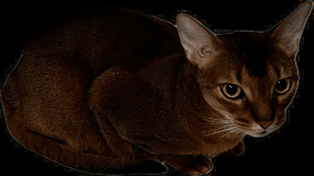
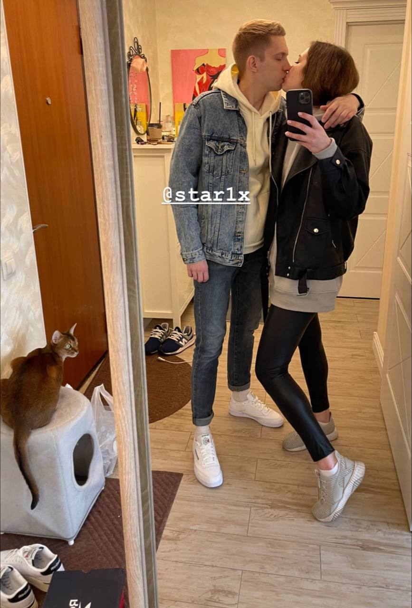

Открытка, когда живешь в мире технологий
Эта фотография из самого нашего счастливого периода
По нашему скромному, общему мнению
Вернуться туда мы не можем, но сделать будущее как там - ДА!
Эта фотография из самого нашего счастливого периода
По нашему скромному, общему мнению
Вернуться туда мы не можем, но сделать будущее как там - ДА!



